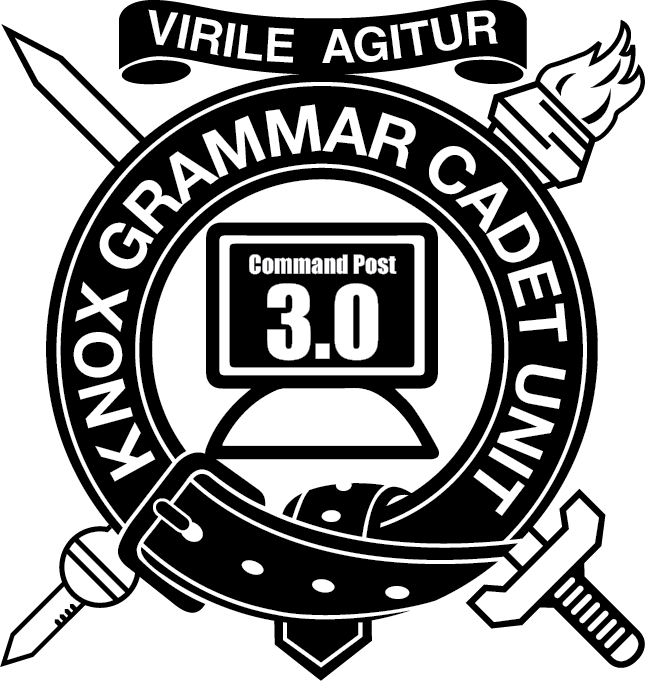
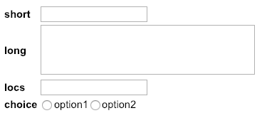

COMMAND POST 3.0
CUO R. Lambinon | CUO T. Muskens
Developer Documentation

Background Information
Command Post 3.0 was made in 2018 by Trent Muskens and Renier Lambinon.
It's first use was AFX 2019
The previous version of the Command Post software (CP 2.0) was developed by Oliver Bolton and Alexander Bradner and was used from 2005 to 2018
The reason this software was developed was to ensure the Command Post runs at peak efficiency at all times. New features in CP 3.0 include:
- A new more modern interface.
- The Software being a web application run over a Local Area Network or Peer to Peer network.
- The log is synchronized across all computers on the network, and is not just stored locally on each computer.
- EXCON CUOs can connect to the server in order to view the log. This makes it easy for people like the QM to view all the MAINTDEMs that have been submitted without disrupting the workers in the Command Post.
- Advanced query system to sort through the log with ease.
- The log automatically backs up to a USB on a regular basis in case there is data failure.
- Easily upload, download and delete the log.
- Allows users to amend the Serials of Returns in accordance with a changing SOI.
- Easy autocomplete for Locations minimises typing.
- Print multiple copies of documents with more ease.
Using the Software
Record Transmission
This is the part of the software used most commonly in the Command Post. When a transmission is being received over any Net, it must be recorded using this page.
To record a transmission, click the button on the left panel that corresponds to the type of return, or simply click message at the top of the panel.
Next, the serials for that return type will appear in the main section of the page.
Fill out all the information that is being transmitted in the relevant fields.
If the Duty Officer would like this to be printed, click the Print checkbox.
Click Record!
Transmission Settings
Settings are a very important part of the Command Post Software. They must always remain updated to ensure accuracy within the Command Post. There are 3 main Settings to be aware of: This Callsign, Duty Officer and This Net. These can be found in the top right corner of the Record Transmission page and in General Settings.
Changing these settings is simply done by clicking the button, and typing in the new setting.
Be aware that the Duty Officer and This Callsign are stored on the server which means they only need to be updated on one laptop whereas This Net is unique to the laptop you are using.
Log
The Log is the page where you can find all the transmissions that have been recorded. There are a few important features to be aware of.
Query
Use the query box at the bottom of the Log page to filter through returns. Use the text boxes to filter any fields that you want. Using the "Content" field, you can search for anything in any return which is useful for information such as Demand Number. Also be advised that the time parameter must be filled in using the six figure Date Time Group as per the SOI and must include a time range (eg. 041200 to 061200).
Edit
Use the Edit button on the bottom right to make any changes to a Return that has been submitted. This is useful incase a mistake has been made. It is not recommended that this used for amendments as it will not keep a copy of the original.
Copy
This feature is designed for the QM, LOGSO and RMO in order to easily copy a return into their spreadsheet. Click the copy button and it will copy a formatted row of all the data within that return that can easily be pasted into a spreadsheet. Make sure you tell the relevant personnel that they can do this.
Log ID
Log ID is a unique number assigned to every transmission that is recorded on the software. This can be helpful using a query if you want to find a transmission in the software that you have printed out.
Notes
The Notes page allows you to write notes that will be stored locally on the computer you are using. This is helpful to record key events that have happened during your shift and allow the next person to know what has happened.
Settings
Log Settings
Use the Log Settings at the start and end of camp to reset the log. It can also be used to recover lost data in case there is a data failure.
Simply click download log at the end of camp to save a copy of the Command Post Log. Then click delete log to clear the software ready for a new AFX.
Edit Return Serials
This element of the Command Post Software is used to ensure the software is always up to date with the most recent SOI. Instructions are provided upon clicking the Edit Return Serials button. Be aware that this saves across the network, and hence must only be done on one laptop.
Ensure this is done whenever there is an SOI amendment.
Edit Callsign and Locations
These pages allow you to change the drop down menus for Locations and Callsigns. These drop down menus make recording transmissions more efficient and more accurate. This is especially true for callsigns which must be consistent when typed in so that they can be searched for in the Log page.
To edit, simply click on the large window where the list is, and you will see that it is actually a text field. Type callsigns or locations, and click enter to seperate them. Then click save, which is in the bottom left of the page.
Edit Return Serials
Use this page to edit the Admin Returns and Serials that will be used for the Record Transmission feature.
This should be done upon updates of the Signalling Operation Instruction.
Use the pane on the left to add, remove or rename Admin Returns. Then select "Edit Serials" in order to change serials. A table will appear in place of this window.
Use the "Add Serial" Button to create rows in the table and then edit them with the Serial, the Description, the Data Type (see below) and Options (see below).
There are 4 Data Types:

For the choice data type, use the option column to declare the options, separated by a comma and space.
When you have finished editing something, make sure to click save.
Adjutant Pre-AFX Checklist
This checklist is designed for the Adjutant to do to ensure Command Post 3.0 software runs smoothly with optimal efficiency throughout the duration of any field exercise.
For the benefit of the unit, please ensure you familiarise yourself with the software and perform EVERY action in this checklist.
- Familiarise yourself with the software by:
- Recording a few transmissions.
- Using the log.
- Creating a query on the log page.
- Printing a return.
- Using “Copy” button in log to transfer data to a spreadsheet.
- Changing “This Callsign”, “This Net” and “Duty Officer”.
- Ensure all Administration Platoon personnel are adequately trained in the use of the software.
- Ensure IT is providing two computers (one of which has the software including the startup script installed) as well as a router for increased network coverage.[a][b]
- Use “Settings” -> “Edit Return Serials” to make any amendments to the Serials in order for them to correspond with any SOI changes. This will change the serials that need to be inputted when you record transmission. Ensure you read the instructions on how to do this.
- Use “Settings” -> “Edit Locations” to update the locations and their Grid References in accordance with locations being used for the Field Exercise. This will affect the dropdown list whenever a location is required.
- Use “Settings” -> “Edit Callsigns” to update the callsigns that automatically appear in the drop downs in To and From fields. This can be done at your discretion, however it is recommended that you only have the COY Signaller callsigns as well as a few others that are regularly used.
- Download the log of the previous AFX and save it in the Cadets RHQ Folder for the Command Post. (This can be done in general settings)
- Click Delete log in order to clear that log from the system. (It will keep all other data such as return serials and locations)
- If you are able to do this before camp, make sure you give this copy of the software to IT to put on the laptop, or you can do so manually once the laptops have been provided.
Maintenance Guide
The software is designed so settings can be modified through the app. If possible try to make the changes through the app first (See changing settings in the software guide)
Log database (SQLite)
Database[c] Format
List imports from file
Static file minifiers
Easter Eggs
What does the startup script do?
It creates a network[d][e]
starts the server
This means you and other people can connect
Maybe have different types of startup scripts [f]
One for local network
One for peer to peer network
One for when connected to router.
How will this be handed down and how will the adjt have access????
- Through RHQ shared folder that is handed down each year
How will we make it easy to run and use and hence make it future proof?
- Simply create one startup script that can be used by anyone - regardless of terminal access.
- For the ADJT to run the software he will need to download a zip folder and click one script - that’s all. WE NEED TO MAKE IT EASY TO USE
- Ensure the IT equipment is given to us every year - Mr Hicks
[a]Should we add in the optional dedicated host?
[b]Also .local that we’ve been using doesn’t always work.
So IT needs to setup the server with a static IP (which will be the same every year) unless it wants to be cool and sets up a dns.
[c]How technical you want to get?
[d]Can’t create network via script
[e]This is why router is preferred